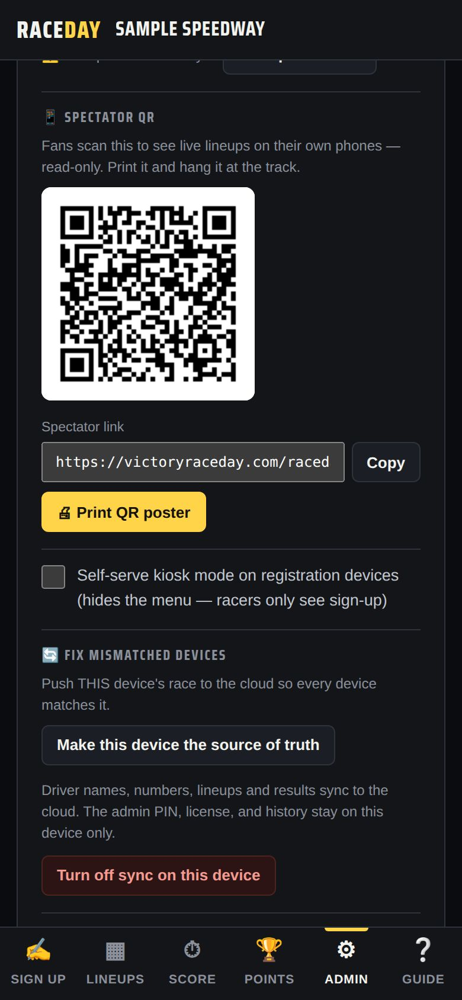
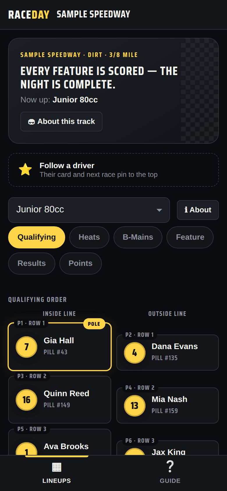
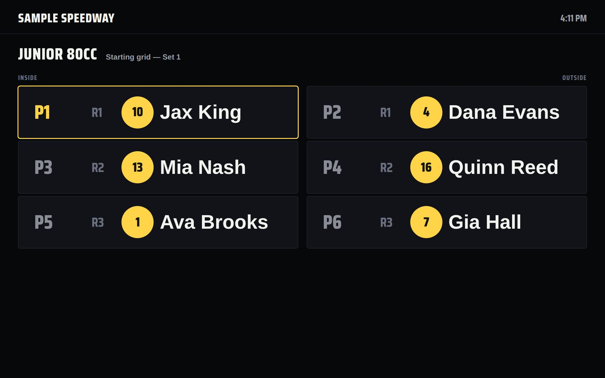
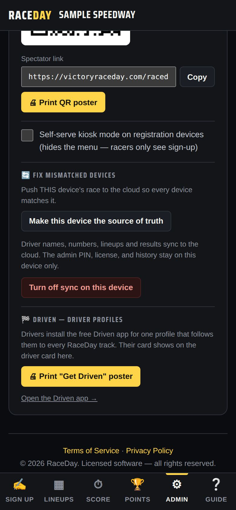

-
Turn on sync first
Fans and the TV link ride on multi-device sync. Start it on your main device — see Multiple devices.
-
Print the fan QR code
In Admin → Multi-device sync, scroll to 📱 Spectator QR. Tap 🖨 Print QR poster and hang it at the gate, the grandstand, and the concession stand. You can also copy the Spectator link to post on Facebook.

Spectator QR -
What fans see
Scanning opens a read-only guest view of your track:
- The track header and what's up next
- ⭐ Follow a driver — pins a driver's card and next race to the top
- Tabs for Qualifying, Heats, B-Mains, Feature, Results and Points
- 📤 on a result to share it as an image
It updates live, saves nothing on their phone, and they can't change anything.

A fan's phone -
Put the TV display up
On a computer or streaming device connected to the TV, open the TV display link — it goes straight to full screen. Or tap 📺 TV display on any device's Lineups tab.

TV display -
How the TV cycles
Every 12 seconds it moves to the next slide: starting grids and heats, B-mains, the feature lineup, feature results, then the season points top 10. Tap the screen for ◀ ▶, 🔒 Lock screen to hold one slide, and ✕ Exit.
-
Self-serve sign-up (kiosk)
Want drivers to sign themselves in? In the sync card, tick “Self-serve kiosk mode on registration devices.” Registration devices then show only the sign-up screen — no menu, no settings.

Kiosk mode setting
Good to know
- Fans never pay and never need an app or account.
- If a fan sees “Couldn't connect to this track,” the QR code is from an old sync code — print a fresh poster.
Next guides
Still stuck? The Field Manual walks through every screen, and the FAQ covers common questions. Or just ask.
Email a question →